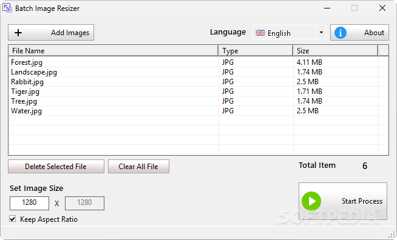

Innovative Software for Every Need.

Phone/WhatsApp: +62 813 5356 1716
Innovative Software for Every Need. |
|
Email: users.ariproject@gmail.com Phone/WhatsApp: +62 813 5356 1716 |
Batch Image Resizer |
Handy image resizer utility you can use to modify the resolution of multiple pictures at once, featuring support for the most common picture formats for a smooth process |
 |
| Batch Image Resizer | 1.0 | 1.2 MB | Download | 2.0 |
Resizing images is essential for various reasons, whether it's ensuring visual compatibility with your device's screen, optimizing photos for websites, or adjusting for printing purposes. While resizing a single photo is simple, handling a large batch can quickly become tedious without the right tool. Batch Image Resizer offers a practical solution for resizing multiple images simultaneously, supporting popular image formats to ensure a smooth and efficient process. Key Features of Batch Image Resizer
How It Works
Why Choose Batch Image Resizer?If you’re looking for a fast, efficient, and easy-to-use utility for resizing photos in bulk, Batch Image Resizer is a reliable choice. Its simple interface and focus on functionality make it ideal for users who prioritize ease of use over advanced features. While it could benefit from additional format support and drag-and-drop capabilities, the program already fulfills its primary purpose of batch resizing effectively. For a no-frills, straightforward image resizing experience, Batch Image Resizer is a tool worth considering. |
Copyright (C) 2025 Ari Sohandri Putra. Read License Terms